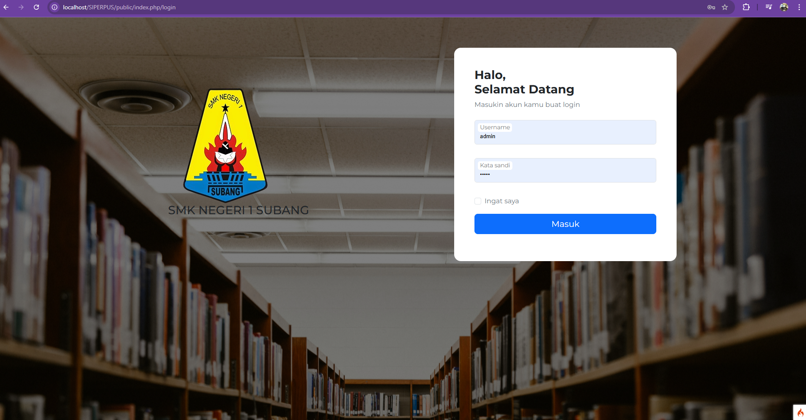
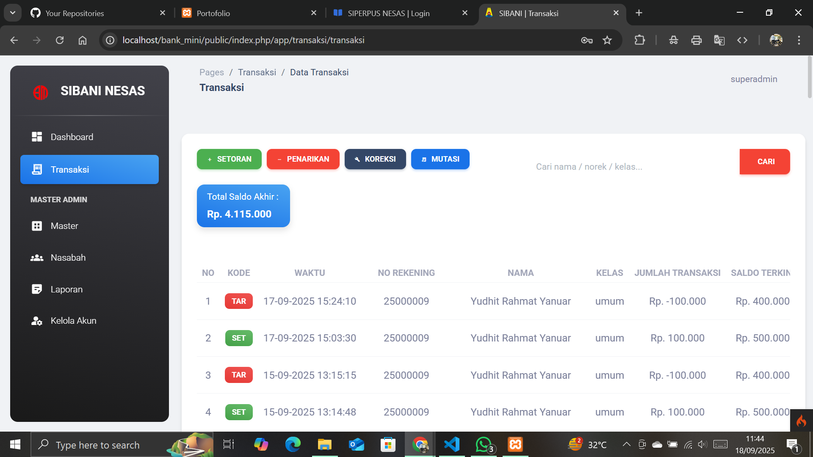
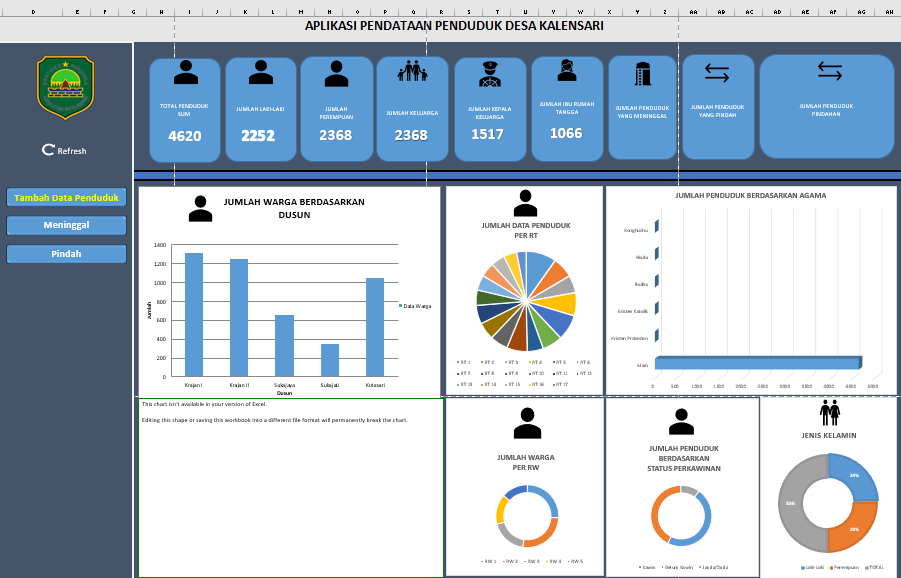

KARYA TERPILIH
Arsitektur Proyek Terbaru

CodeIgniter 4 • Education
Sistem Pelayanan Perpustakaan Sekolah Digital
Platform otomasi sirkulasi buku, manajemen inventaris, dan rekapitulasi data perpustakaan berbasis web modern.

Framework CI4 • FinTech
Aplikasi Bank Mini Sekolah
Sistem manajemen tabungan siswa dengan pencatatan transaksi *real-time* terintegrasi database.

VBA & Macro • Offline Automation
Sistem Administrasi Desa
Otomasi pengolahan data kependudukan dan surat-menyurat berbasis Excel Makro tingkat lanjut.